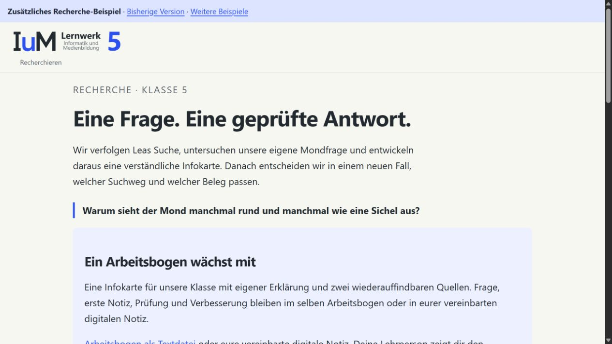
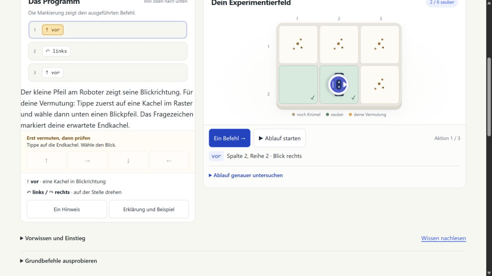

01 · 13.09.2026
Reinigungsfall
vor → links → vorVorhersagen · ausführen · erklärenAusführbarer Entwurf mit sechs Lernstationen.
Ein konkretes Beispiel:
Eine umfangreiche Quellenkarte wird zu einer kleinen Notiz.
Ziel, Lernhandlung und Kritik bestimmen die Überarbeitung.

Workspace & Obsidian · Codex · Git/GitHub · HyperFrames
Lernbogen, echte Quellen und Kriterien mitgeben.
Dateien bearbeiten und die Lernseite im Browser prüfen.
Gezielt ändern und dieselbe Fassung nachprüfen.
„Lass das Kind zwei echte Textauszüge vergleichen. Zeige Leas Entscheidung erst nach der eigenen Auswahl und Begründung.“
Informationen kriterienbasiert (unter anderem auf Herkunft und Plausibilität) überprüfen
Band 5/6, Ziel 3.1.2.1(2)
Informationen nach Kriterien prüfen.
Herkunft und Plausibilität gehören zum Auftrag.
Klasse 5: erster eigener Such- und Prüfweg.
Klasse 6: Indexmodell und widersprüchliche Darstellungen.
Das ist eine Projektentscheidung.
Im Modul M02 selbst suchen und die eigene Antwort an Textstellen prüfen.
Notiz mit Beleg und eigener Erklärung
Eigene Jahresplanung: 38 UE Bedarf · noch nicht erprobt, Verfügbarkeit offen.
An der Werkbank: M02 Recherche wird in Lernhandlungen und Zeit übersetzt.
Viele Angaben, bevor eine eigene Antwort entsteht.
Reviewbefund: Die Quellenkarte verlangt zu viel auf einmal.
Das habe ich herausgefunden.
Hier steht die passende Information.
Diese Seite kann ich wieder öffnen.
Befund am Entwurf 1.6.0: Die passende Passage war schon ausgewählt. Revision: erst selbst vergleichen.
Ein Auftrag wird am Material prüfbar.
Aktuelles Zusatzbeispiel · Vergleich bewusst öffnen, keine technische Sperre.
vor → links → vorVorhersagen · ausführen · erklärenAusführbarer Entwurf mit sechs Lernstationen.
4 × [vor; vor; links]Aktive Anweisung + Durchlauf sichtbarNeun Schritte; Rückmeldung passt zum konkreten Auftrag.

Elf frei wählbare Schritte; Erklärungen, Kriterien und Wissen.
Review → Hilfe und Rückmeldung müssen zur Lernhürde passen.
Neuer Anspruch 20.09. → Auch selbstständig verstehen und nachschlagen.
An der Werkbank: Entwurf nutzen → Befund begründen → gezielt ändern → erneut prüfen.
Versionen, Revisionsauftrag und GrenzenFachliche Expertise bestimmt den Maßstab und beurteilt die Ergebnisse.
LesefassungIm Juli stand die modulare Architektur. Im September wurde der Selbstlernanspruch präzisiert. Im Oktober zeigten konkrete Materialreviews weitere Vermittlungshürden. Jede Änderung knüpft an einen fachlichen Anspruch an. Eine überzeugend wirkende Oberfläche ist dafür ein Ausgangspunkt, noch kein Nachweis gelingenden Lernens.
Dokumentierte Projektgrundlagen: Q01, Q04, Q08, Q09
Ausführlich lesen und Quellen ansehenDie Werkzeuge übernehmen verschiedene Aufgaben. Workspace und Obsidian halten Quellen, Anforderungen und Entscheidungen verfügbar. Codex kann damit Inhalte und Code ausarbeiten und Werkzeuge einsetzen. Git und GitHub machen Fassungen und Bereitstellung nachvollziehbar. HyperFrames setzt geplante Darstellungen als Medien um. Die steuernde Arbeit wird am Recherchebeispiel sichtbar: Der Lernbogen verlangte eine eigene Auswahl, der Entwurf nahm sie vorweg. Die Korrektur setzte zwei echte Textauszüge vor die Modellentscheidung. Kontext geben, die konkrete Seite bearbeiten und den geänderten Ablauf nachprüfen greifen dabei ineinander. Die Vortragsanweisung ist eine redaktionelle Verdichtung, kein Originalprompt.
Dokumentierte Projektgrundlagen: Q01, Q02, Q05, Q10, Q11, Q07, Q08, Q09
Ausführlich lesen und Quellen ansehenDie erste Synthese ordnete 51 kuratierte Aussagen ein und leitete 15 Designprinzipien ab. Die Zahlen beschreiben den damaligen Bestand. Sie sind kein Qualitätswert. Seit dem 22. September nutzt die dokumentierte Planung die Anhörungsfassung vom 21. September 2026. Ihr Entwurfsstatus bleibt ausdrücklich sichtbar.
Dokumentierte Projektgrundlagen: Q02, Q03, Q06, Q07, Q12
Ausführlich lesen und Quellen ansehenNoch nicht pilotierter Projektbedarf. Die tatsächliche schulische Verfügbarkeit bleibt zu klären.
Ausführlich lesen und Quellen ansehenDie Sichtung benannte unverständliche Begriffe, ein abstraktes Beispiel und zu umfangreiche Quellenkarten. Die Revision führte reale Quellenansichten und eine wachsende Notiz ein. Herkunft und Tragfähigkeit werden später am konkreten Inhalt geprüft. Der fachliche Anspruch bleibt erhalten, während der Anfang weniger voraussetzt.
Dokumentierte Projektgrundlagen: Q07, Q08
Ausführlich lesen und Quellen ansehenDie Revision 1.6.1 ergänzte den Textstellenvergleich und vereinfachte die Leseführung. Im Modell sank die sichtbare Wortzahl von 1.022 auf 684, in der Quellenprüfung von 951 auf 629. Entscheidend ist die veränderte Folge von Handlung und Erklärung. Die Zahlen sind weder Altersgrenze noch Wirksamkeitsmessung.
Dokumentierte Projektgrundlagen: Q08, Q09
Ausführlich lesen und Quellen ansehenNach einer Codeänderung verschwindet der Bodenplan.
Programm und Wirkung müssen gemeinsam sichtbar bleiben.
„Lass den Boden nach der Codeänderung sichtbar.“
Code ändern, Raum prüfen, zwei verschiedene Aufgaben ausführen.
Beispielauftrag verdichtet · kein historisches Originalzitat. Ein neuer Entwurf bleibt eine prüfbare Hypothese.
Belege, weitere Fassungen und GrenzenDer adaptive Qualitätszyklus bindet Kriterien und Befunde an die geprüfte Dateifassung. READY_FOR_REVIEW bestätigt formale Abschlussbedingungen. Ein kritischer Selbstreview kann konkrete Mängel aufdecken. Ob Lernende die Aufgabe verstehen und wie viel Zeit sie brauchen, muss zusätzlich an tatsächlicher Nutzung beobachtet werden.
Dokumentierte Projektgrundlagen: Q05, Q09, Q10
Ausführlich lesen und Quellen ansehenDer Quellenwortlaut verlangt eine begründete Prüfung von Informationen.
Eine hilfreiche Passage zur eigenen Antwort zeigen und mit einer zweiten Darstellung vergleichen.
Begründen, wodurch die Antwort gestützt, präzisiert oder noch nicht geklärt ist.
Ein gesetzter Haken zeigt diese fachliche Entscheidung noch nicht.
Ausführlich lesen und Quellen ansehenMotivation · Ein Beispiel zum Erleben
Was kann ich als Fachexperte mit KI fürs Lernen erschaffen?
Erstelle eine interaktive detaillierte Wireframe Version des Höhlengleichnis, die aus firstPerson-Sicht erkundet werden kann im Stile eines Games.
Analysiere das Ergebnis und führe gezielte Verbesserungen durch um es deutlich zu verbessern. lege dabei einen Fokus auf die firstperson Erfahrung. die Limitationen der jeweiligen stufen müssen auch beim/ nach dem Verlassen der Höhle besser erfahren werden.
Originalwortlaut · Entstehungschat zur gezeigten Version ↗
LesefassungUnser Rundgang · Hinter der Mauer
01 · FIGUREN UND STÄBEForm und Bewegung
prägen den Schatten.
02 · DIE LICHTQUELLEDie Anordnung bestimmt
die Projektion.
03 · BEWUSST GESTALTENAuch das Schattenspiel
ist produktive Arbeit.
Mit KI: Kontext, Prompting und Werkzeuge bewusst einsetzen.
LesefassungMeine Motivation · Das Lernwerk als praktischer Versuch
Neue Möglichkeiten fürs Lernen entwickeln.
Dabei lerne ich hinzu, prüfe Ergebnisse und erkenne Grenzen meines Urteils.
LesefassungVertiefung · Höhlengleichnis und KI · 1 / 6
Was beeindruckt mich – und warum?
Welche Bedingungen prägen das Ergebnis?
Wie organisiere ich die Zusammenarbeit?
Welche Belege tragen meine Annahmen?
Was verstehe ich selbst, was ist geprüft?
Welchem Lernen soll das Ganze dienen?
Eigene Übertragung: Die Fragen ergänzen sich und können gleichzeitig wichtig sein.
Ausführlich lesen und Quellen ansehenVertiefung · Höhlengleichnis und KI · 2 / 6
Quellen tatsächlich lesen und ihren Geltungsbereich klären.
Fachliche, funktionale und didaktische Anforderungen benennen.
Geeignete Tests, Gegenbeispiele und bei Bedarf unabhängige Expertise.
Ein weiterer KI-Review ist noch keine unabhängige Prüfung.
Ausführlich lesen und Quellen ansehenVertiefung · Höhlengleichnis und KI · 3 / 6
Funktioniert die Szene? Passen Lichtquelle, Gegenstand und Schatten zusammen?
Kann ich den Zusammenhang erläutern und einen neuen Fehler erkennen?
Können sie den Zusammenhang selbst begründen und auf einen anderen Fall übertragen?
Ein gelungenes Produkt beantwortet die beiden anderen Fragen noch nicht.
Ausführlich lesen und Quellen ansehenVertiefung · Höhlengleichnis und KI · 4 / 6
Ich kann erklären, Zusammenhänge übertragen und unerwartete Fehler erkennen.
Ich kläre Zuständigkeit, Prüfgegenstand, Verfahren und Aussagegrenzen der Begutachtung.
Beides kann ein Urteil begründen. Durch Quellenarbeit und Zusammenarbeit kann ich hinzulernen.
Ausführlich lesen und Quellen ansehenVertiefung · Höhlengleichnis und KI · 5 / 6
Systemverständnis, Prozessgestaltung und Fachurteil entwickeln sich nicht automatisch nacheinander.
Der Schattenwurf bildet die Entstehung einer konkreten Modellantwort nicht technisch ab.
Wissenschaftlich vermitteltes Wissen ist nicht grundsätzlich schwächer als persönliche Expertise.
Ziele und Maßstäbe gehören in jeden Schritt des Arbeitsprozesses.
Vertiefung · Höhlengleichnis und KI · 6 / 6
Grundlagen verstehen und Handlungen selbstständig ausführen.
Erklärungen hinterfragen, selbst entscheiden und Rückmeldung nutzen.
Arbeit verteilen, Grundlagen einbringen und Ergebnisse prüfen.
Reflexion: Was soll am Ende die lernende Person selbst erklären oder tun können?
Ausführlich lesen und Quellen ansehenVerständliche Erklärungen, eigene Handlungen und Rückmeldung.
Arbeitsgrundlagen und präzisierter Selbstlernanspruch · Q03 / Q04
Informationen kriterienbasiert (unter anderem auf Herkunft und Plausibilität) überprüfen
3.1.2.1(2), Band 5/6 · Anhörungsfassung 21.09.2026, S. 35
Ein erklärender Lernweg mit eigener Anwendung und überprüfbarem Ergebnis.
Begründete Konzeption · keine automatische Ableitung
Aus Grundlagen werden begründete Anforderungen an mein Lernwerk.
LesefassungZIELBILD GYMNASIUM 5–7 · SELBSTSTÄNDIG LERNEN, BEGLEITUNG BLEIBT MÖGLICH
Ein geplanter Kernlernweg
Flexibel ergänzen, auswählen und verbinden.
Recherche wird zu einem zusammenhängenden Lernweg: selbst suchen, Belege wählen und eine eigene Antwort prüfen.
Recherche: Die Entwicklung nachvollziehen.
Roboter: Dieselbe Konzeption im Lernweg prüfen.
Von der gestalteten Form zur eigenen Lernhandlung.
LesefassungWo endet „vor · links · vor“? Endkachel und Blick wählen, dann einzelne Befehle verfolgen.
Grundbefehle, Beispiel und Hinweis stehen beim Programm.
„Was ändert die Drehung?“Vermuten, den Fehler untersuchen und eine eigene Korrektur prüfen.
„Warum gehören Fahrt und Drehung in dieselbe Schleife?“Die falsche Aktion finden, korrigieren und die Änderung begründen.
„Was zeigt deine Spur?“Die Simulation prüft die Fahrt. Eigene Erklärungen werden mit Kriterien besprochen.
LesefassungEin neuer Blick auf den Roboter: Wie verändert eine Drehung den Weg?
Ein Ausschnitt aus „Sauber geplant“.
Vorhersagen, etwas verändern und die Wirkung beobachten.
Leas Suche verfolgen und an den Denkstellen eigene Ideen ausprobieren.
Echter Lernschritt · Film 3:07 · bis zur ersten Notiz.
Zwei Entscheidungen auf dem Weg zur ersten Notiz.
Zwei mögliche Einstiege. Eigene Wege, Zuschauen und Mitdenken sind ebenso willkommen.
Im eigenen Browser erkunden · rund zehn Minuten Zeit.
Zugangslinks für Teams ↗Schaut euch um, probiert etwas aus – so, wie es für euch passt.
Vielleicht entdeckt ihr eine Lernchance, eine Hürde oder eine gute Frage.
Ihr könnt auch einfach zuschauen und mitdenken.
Ein Eindruck. Eine Frage.
Eine Erfahrung aus eurer Praxis.
Was hat euch angesprochen – und wo würdet ihr weiterdenken?
Was spricht euch an?
Was irritiert euch?
Mich interessiert euer Blick als Beratende.
Zum Lernwerk.
Zur Arbeit mit KI.
Zu euren eigenen Ideen.
Was möchtet ihr noch ansprechen?
Ich möchte die bestehenden
Lernwege verbessern.
Eure Erfahrungen und Fragen können mir neue Blickwinkel eröffnen.
Bei einer Erklärung, einem Modell oder einer fachlichen Frage.
Für Lernende, Unterricht und eure Beratung.
Ein Gedanke, eine Frage oder ein genauerer Blick –
gern auch später über das LMZ-Teams.
So, wie es für euch passt.
KI erweitert, was ich umsetzen kann.
Euer fachliches Urteil gibt der nächsten Fassung Richtung.
Eure Erfahrung und eure Fragen bereichern den nächsten Blick.
Lesefassung